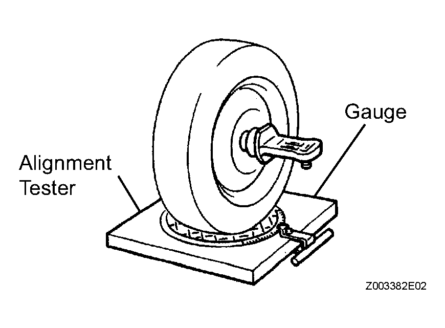

Front Wheel Alignment: Adjustment
- INSPECT TIRE
- Inspect the tire (see INSPECTION ).
- INSPECT VEHICLE HEIGHT
Standard vehicle height
STANDARD VEHICLE HEIGHTItem Specified Condition Front A - B 82 mm (3.22 in.) Rear D - C 12 mm (0.47 in.) Measure points:
A: Ground clearance of front wheel center
B: Ground clearance of lower suspension arm front bolt center
C: Ground clearance of axle beam set bolt center
D: Ground clearance of rear wheel center
NOTE: Before inspecting the wheel alignment, adjust the vehicle height to the specified value.HINT:
Bounce the vehicle at the corners to stabilize the suspension and inspect the vehicle height.
- INSPECT TOE-IN
Standard toe-in
STANDARD TOE-INItem Specified Condition Toe-in (total) A + B: 0°+-11' (0° +-0.19°)
C - D: 0 +-2 mm (0 +-0.08 in.)HINT:
- Measure "C - D" only when "A + B" cannot be measured.
- If the toe-in is not within the specified range, adjust it at the rack ends.
- ADJUST TOE-IN
- Measure the thread lengths of the right and left rack ends.
Rack end length difference: 1.5 mm (0.059 in.) or less
- Remove the rack boot set clips.
- Loosen the tie rod end lock nuts.
- Adjust the rack ends if the difference in thread length between the right and left rack ends is not within the specified range.
- Extend the shorter rack end if the measured toe-in deviates toward the outer side.
- Shorten the longer rack end if the measured toe-in deviates toward the inner side.
- Turn the right and left rack ends by an equal amount to adjust the toe-in.
HINT:
Try to adjust the toe-in to the center of the specified range.
- Make sure that the lengths of the right and left rack ends are the same.
Standard rack end length difference: 0 +-1 mm (0.0039 in.)
- Torque the tie rod end lock nuts.
Torque: 74 N*m (749 kgf*cm, 54 ft.*lbf)
NOTE: Temporarily tighten the lock nut while holding the hexagonal part of the steering rack end so that the lock nut and the steering rack end do not turn together. Hold the flat section of the tie rod end and tighten the lock nut. - Place the boots on the seats and install the clips.
HINT:
Make sure that the boots are not twisted.
- Perform VSC system calibration (see OPERATION CHECK ).
- Measure the thread lengths of the right and left rack ends.
- INSPECT WHEEL ANGLE
- Turn the steering wheel fully and measure the turning angle.
Standard wheel turning angle
STANDARD WHEEL TURNING ANGLEItem Specified Condition Inside wheel 33°42' +-2° (33.70° +-2°) Outside wheel (reference) 30°04' (30.07°) If the right and left inside wheel angles differ from the specified value, check the right and left rack end lengths.
- Turn the steering wheel fully and measure the turning angle.
- INSPECT CAMBER, CASTER AND STEERING AXIS INCLINATION
- Put the front wheel on the center of the alignment tester.
- Remove the wheel cap.
- Install the camber-caster-steering axis inclination gauge at the center of the axle hub or drive shaft.
- Adjust the camber, caster and steering axis inclination.
Standard camber, caster and steering axis inclination

Courtesy of © TOYOTA, LICENSE AGREEMENT TMS1002STANDARD CAMBER, CASTER AND STEERING AXIS INCLINATIONItem Specified Condition Camber Right-left error -0°34' +-45' (-0.57° +-0.75°)
30' (0.5°) or lessCaster Right-left error 1°45' +-45' (1.75° +-0.75°)
30' (0.5°) or lessSteering axis inclination Right-left error 10°01' +-45' (10.02° +-0.75°)
30' (0.5°) or lessNOTE:- Inspect while the vehicle is empty (without the spare tire or tools on board).
- The maximum tolerance of right and left difference for the camber and caster is 30' or less.
- Remove the camber-caster-steering axis inclination gauge and attachment.
- Install the wheel cap.
If the caster and steering axis inclination are not within the specified values after the camber has been correctly adjusted, recheck the suspension parts for any damage and/or worn-out parts.
- ADJUST CAMBER NOTE: Inspect toe-in after the camber has been adjusted.
- Remove the front wheel.
- Remove the 2 nuts on the lower side of the shock absorber.
- Clean the installation surface of the shock absorber and steering knuckle.
- Temporarily install the 2 nuts (step a).
- Fully push or pull the front axle hub in the direction of the required adjustment (step b).
- Tighten the 2 nuts.
Torque: 132 N*m (1,350 kgf*cm, 97 ft.*lbf)
NOTE: Keep the bolts from rotating and torque the nuts. - Install the front wheel.
Torque: 103 N*m (1,050 kgf*cm, 76 ft.*lbf)
- Check the camber.
If the measured value is not within the specified range, calculate the required adjustment amount using the formula below.
Camber adjustment amount: Center of the specified range - Measured value
Check installed bolts combination. Select appropriate bolts from the table below to adjust the camber to within the specified range.
Standard selection table
STANDARD SELECTIONItem Selection Table Move the axle toward (+) in step (B) Refer to table (1) (Move the axle toward positive side) Move the axle toward (-) in step (B) Refer to table (2) (Move the axle toward negative side) NOTE:- The body and suspension may be damaged if the camber is not correctly adjusted according to the table above.
- Replace the nut with a new one when replacing the bolt.
- Repeat the steps mentioned above. In step (A), replace 1 or 2 selected bolts.
HINT:
Replace one bolt at a time when replacing 2 bolts.
NOTE:- The body and suspension may be damaged if the camber is not correctly adjusted according to the table above.
- Replace the nut with a new one when replacing the bolt.
- Repeat the steps mentioned above. In step (A), replace 1 or 2 selected bolts.
HINT:
Replace one bolt at a time when replacing 2 bolts.